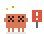

A Claude Code mod that shows who is doing what, how far along they are, and how long is left. Right above your prompt.
/plugin install agent-crew --marketplace bekir1184/agent-crew
While Claude works, a framed line shows its current step: searching, reading, writing, running tests.
When the turn ends it shrinks to one quiet line with the totals. The arrow opens what happened.
They line up under Claude, one row each, and hold the tool they're using. Helpers tuck in under their parent.

Browsinga globe
Startinga hard hat
Asking youa question bubble
Faileddizzy eyes
Cancelledfast asleepAgents spend most of their time thinking, so the critters keep it lively: an hourglass, a thought cloud that fills with a question mark, a lightbulb that lights up.
Each one at its own pace, so the crew is never in lockstep.
When an agent stops to ask for permission, it turns yellow with a question bubble, and the title says how many are waiting on you.
Each row has an arrow. It opens everything the row had no room for: the full task, its to-do list, the files it touched, and its tokens.
Agent Crew remembers how long this kind of agent took before, and counts down from there. Running long? It re-estimates instead of going negative.
A row shows what the agent's own work took: what it read in and what it wrote.
Claude also keeps the conversation in a cache and re-reads it on every request. That's not the agent's work, so it lives in the details panel instead of inflating the row.
/plugin install agent-crew --marketplace bekir1184/agent-crew
/crew demo for a 30-second show.